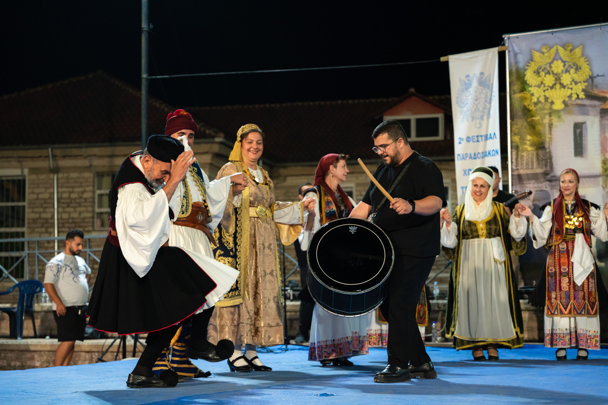

01Ελληνικοί Παραδοσιακοί Χοροί
Ξεκίνησε τον Οκτώβριο του 2015. Υπεύθυνοι: Άγγελος Σταμάτης και Αντώνης Μαρούδας. Ο Άγγελος Σταμάτης είναι απόφοιτος Τ.Ε.Φ.Α.Α. Δημοκριτείου Πανεπιστημίου Θράκης και κάτοχος Μ.Δ.Ε. στον «Αθλητικό Τουρισμό, Οργάνωση Δρώμενων, Χορός».